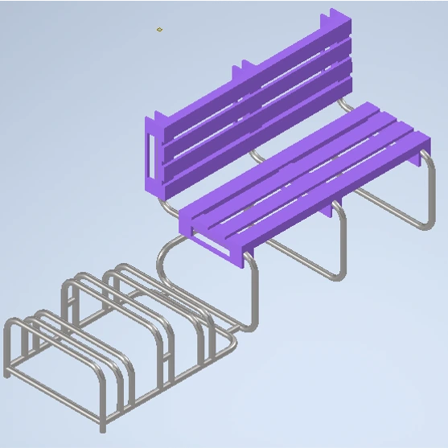
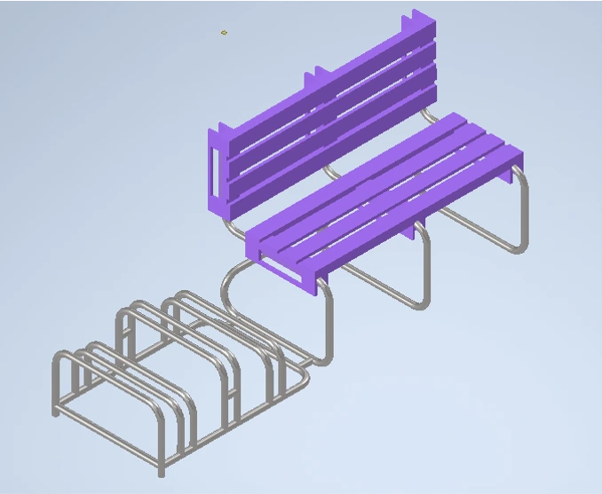
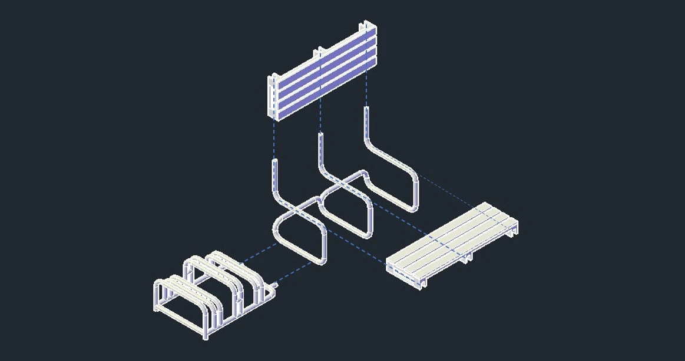
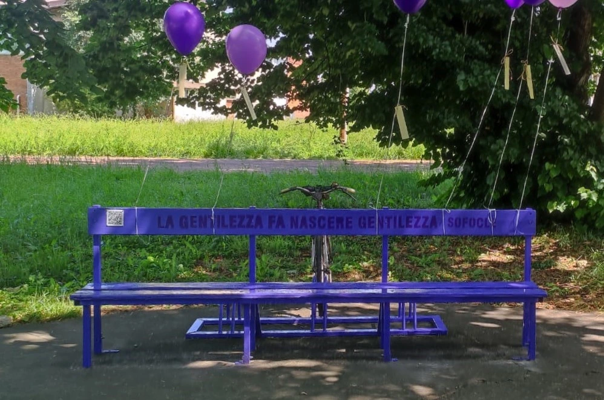

To develop this bench, we decided to use pallets as main material, as it is easily reusable and recyclable. To put together the parts, we decided to create a steel frame with tubular profiles, that we could easily retrieve from dismentled old school desks. Next to the seating area, we added a bike rack to encourage sustainable mobility.
Bench of Kindness Development and Realization
Check out my journey!

Abstract
Realization of the project "Bench of Kindness".
Development of a bench, mandatorily in a purple shade, to be built by the school and placed inside the school complex.
To be actually built, the project had to compete against others.
The Project
To design the bench, students had to follow specific rules:
- Build with recycled materials;
- Paint with a shade of purple;
- Adorned with phrase or poem about kindness;
- Provide a QR code to reach the description site.
The developed projects, would then be voted by jury basing on:
- Feasability;
- Functionality;
- Creativity and originality;
- Disciplinary transversality (number of subjects involved).

Project Development

Real Life Realization
Then the project competed against others, resulting in the winning one.
The realization took place in the school workshop, and it has been decided
to actually use an already existing bench, painting it purple and adding
the bike rack on the back.
It doesn't fully look like the original project, but it still represents
the values we wanted to convey.
